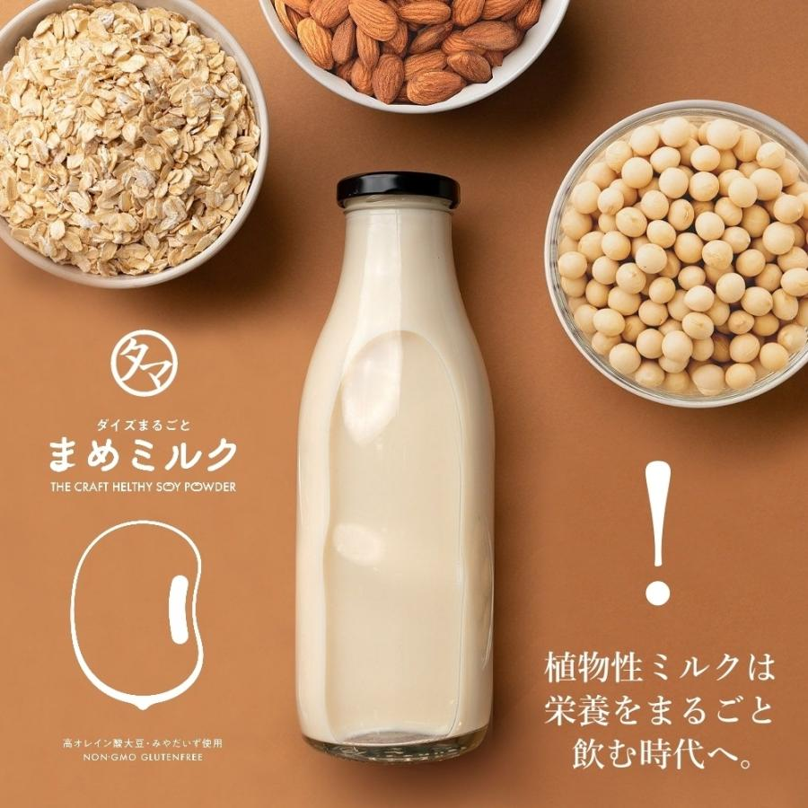

老化は治療できる病である
-

- 
大豆の栄養と効果効能・食べ方・注意点・保存法
大豆とは
大豆（soy beans）は、マメ科の一年草です。中国東北部からシベリア原産で、世界各地で栽培・利用されており、完熟したものは大豆油の原料として用いられ、絞り粕は飼料に、未成熟な種子は枝豆として食されます。
大豆タンパクが豊富で、タンパク資源として重要な食材です。牛乳や卵など、動物性タンパク質に匹敵する良質なタンパク質を含有すること、また調理法によって肉のような食感を得られることから、「畑の肉」とも呼ばれます。
タンパク質以外に、鉄、カルシウムなどミネラルが豊富なほか、近年は大豆イソフラボンの示す女性ホルモン様作用も注目されています。
世界的には、大豆油の原料として用いられる割合が生産量の87％と大部分を占め、環境に配慮した素材である大豆インキの需要も拡大しています。
日本では大豆油よりも菜種油が主に用いられてきたため、大豆油の生産量は菜種油の半分以下です。その代わり日本では、古くから豆腐や油揚げなどの食品原料として大豆を用いてきたほか、味噌・醤油・納豆といった発酵食品として親しまれてきました。
日本人にとってなじみ深い食材ですが、しかし国内自給率は3～4％であり、大半を輸入に頼っています。
大豆の効果・効能
大豆に含まれる栄養素が持つ効果・効能・働きを解説します。
糖質・脂質を抑えながらタンパク質を補給できる
大豆タンパク質は、その他のタンパク質高含有食品に比べて、低糖質かつ低脂質なため、筋肉増強に限らず運動をしていない人のタンパク質補給としても利用しやすい点が特徴です。
タンパク質は、骨や歯、皮膚、血管、内臓、髪の毛など、人体のあらゆる部位に利用されているため、不足するとさまざまな不調につながります。
トレーニングのお供としてだけでなく、普段からの健康維持としても欠かせない栄養素です。
コレステロール値を低下させる
中性脂肪を低減する
大豆イソフラボンによる美肌効果や血流改善効果に期待
サポニンの抗酸化作用
大豆の食べ方
大豆の栄養素を損なわない洗い方や調理方法を解説します。
大豆のおすすめ調理方法
大豆の栄養素を余さず効率的に摂取するには、なるべくそのまま食べることが重要です。加熱・粉砕などの加工を加えると、一部の栄養が損なわれてしまいます。
一方で、タンパク質を補給したい、など目的が明確な場合は、大豆タンパクを凝縮したソイプロテイン製品を利用するといいでしょう。
ターメリック（ウコン）は本当に体にいいのか？気になる効果と摂り方。
ターメリック（ウコン）の効能
ターメリックに関する研究結果の中で最も有名なのは、「ターメリックが炎症の防止に効く可能性がある」というものです。
実際、ターメリックに含まれるクルクミンという化合物（ターメリックが黄色いのはクルクミンのおかげです）には抗酸化作用がありますが、「クルクミン400〜500 mgは、2000 mgのアセトアミノフェン（タイレノールなどの解熱鎮痛薬）とほぼ同等の鎮痛効果をもつ可能性がある」と、米プリシジョン・ニュートリション社のブライアン・セント・ピエール氏は言います。
ターメリック（ウコン）摂り方&使い方
米健康系ニュースメディア「redbook」によると、「ターメリックを黒コショウと一緒に摂れば、ターメリックの吸収力を2000倍にする可能性がある」といいます。
野菜炒めやカレーを作ったり、シンプルに鶏肉とライスに味付けしたいときも、ひとふりするだけでも良いかもしれません。そして、流行のゴールデンラテに少量加えるのもアリかもしれません。
ウコンの色素成分であるクルクミンは、食品安全委員会「JECFA」が一日許容摂取量を体重1kg当たり3mgと設定しています。これは、たとえば体重50 kgの方で150 mgの摂取量です
赤ワインポリフェノール等の効果効能。体にいい健康的な飲み方
なぜ赤ワインが効果的なのか？
なぜ、赤ワインを中心に健康効果が叫ばれているのでしょうか。その理由のひとつが、「ポリフェノール」にあります。 ポリフェノールは、悪玉コレステロールの酸化を和らげる効果があるなど、ワインだけでなくチョコレートや緑茶などでも注目される成分です。 赤ワインは、黒ブドウの果皮と種子、果実からつくられるワインですが、ポリフェノールは果皮と種子に多く含まれます。 赤ワインはポリフェノールが豊富なワインであるため、結果的に健康効果と結びつけられていると考えられるでしょう。
ワインのポリフェノールの健康効果
眼精疲労回復
ワインの原料のぶどうには、ポリフェノールの一種であるアントシアニンが含まれています。ポリフェノールは成分の総称で、アントシアニンもポリフェノールと呼ばれる成分の一つです。 アントシアニンは、高い抗酸化作用を持ち血行促進の効能があります。血行が良くなるので、疲れた目にも栄養が行き届き、眼精疲労に効果的といわれています。 強い紫外線から植物を守っているのがアントシアニンですが、人間の目に対しても同じような効果があり目の紫外線対策にもなります。ワインの成分であるぶどうと同様に、ブルーベリーにもアントシアニンが多く含まれています。
免疫力の改善
ポリフェノールには、カテキンという成分も含まれているのですがこちらは免疫力の改善に効果があります。お茶にも含まれているカテキンは、古くから身体に良いと親しまれている成分で、最近の研究ではインフルエンザウイルスにも有効だということが判りました。
肝機能改善
肝機能改善に効果が期待されているのが、こちらもポリフェノールの一種であるクルクミンです。肝臓は、胆汁を分泌し脂肪を分解したり解毒の作用があるといわれています。 クルクミンは胆汁の分泌をサポートし、解毒酵素を増加させるといった効能があります。疲労回復や二日酔いにも良いといわれ、ウコンにも含まれている成分です。
認知症予防
高齢化社会の日本では話題に上ることが多い認知症ですが、65歳以上の高齢者の15％の人が悩んでいる疾患です。
ワインに含まれるマグネシウムは脳細胞の活性化に効果が期待されています。また、ポリフェノールはDNAを保護する役割さえ持っていると言われています。認知症やがん予防といった観点からも同成分は注目されているのです。
ワインは適量飲むことで効果を発揮
人間、誰もが健康になりたいと願っており、「これを摂取すれば健康効果が期待できる」ということで大量に摂取する方が出てきます。しかし、どんなに健康に良いといっても適量が存在し、過剰摂取すると別の弊害が訪れてしまうのです。とくにワインは、「アルコール飲料」です。アルコール度数は最低でも10度程度あり、高いものは15%近くになります。それらを、大量飲酒すれば、ワインの健康効果ではなくアルコールによる弊害が訪れてしまうでしょう。
厚生労働省では、酒類による適量ではなく、1日のアルコールの摂取量の目安を公開しています。 死亡率が高いと言われているのが、純アルコールを1日20g摂取している方だと示唆されているため、ワインの場合は「120ml（約1杯）＝12g」、つまり「1日約1杯半」となるのです。 それ以上飲んだら危険といった数値ではないかもしれませんが、健康効果を期待する方であればこの量でワインを摂取することを心がけると良いのではないでしょうか。